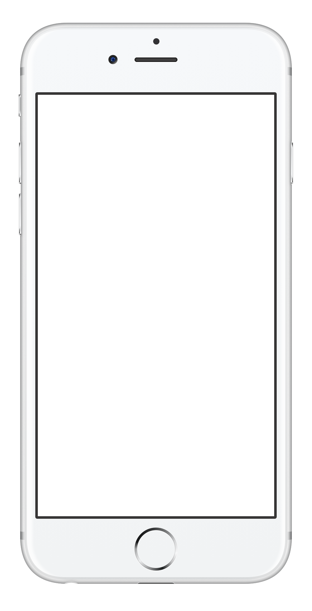
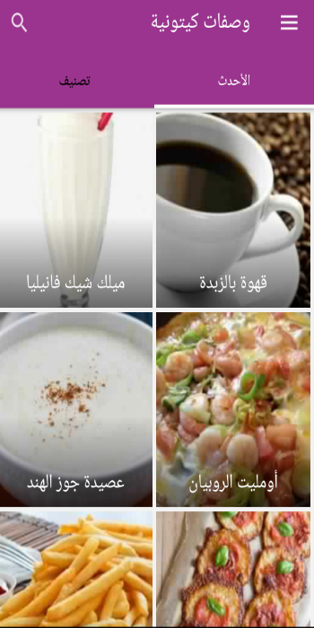
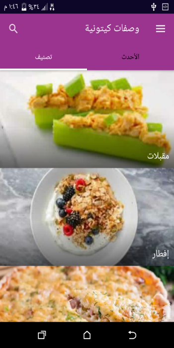
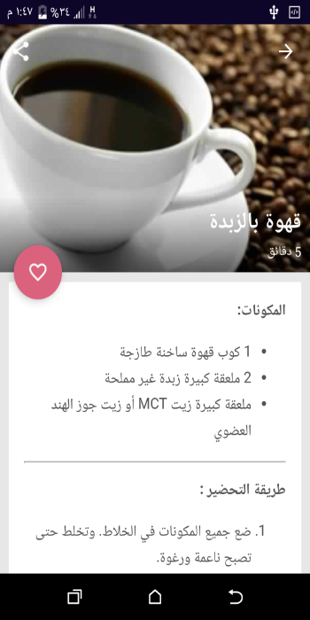

وصفات كيتونية
دليلك لوصفات كيتو الشهية
تطبيق عربي يحوي مجموعة مختارة ومتجددة من الوصفات التي يمكنك تناولها عند اتباع نظام حمية الكيتو
مميزات التطبيق :
١ - تصميم بسيط و سهل الاستخدام في الوصول الي وجباتك
٢- الوجبات مقسمة الي عدة تصنيفات مختلفة (مقبلات - إفطار - أطباق رئيسية - حلويات - مشروبات)
٣- تستطيع حفظ وجبتك المفضلة في مفضلة التطبيق للرجوع اليها متي تريد
٤- جميع الوصفات باللغة العربية
٥- يتم اضافة وجبات جديدة دوريا